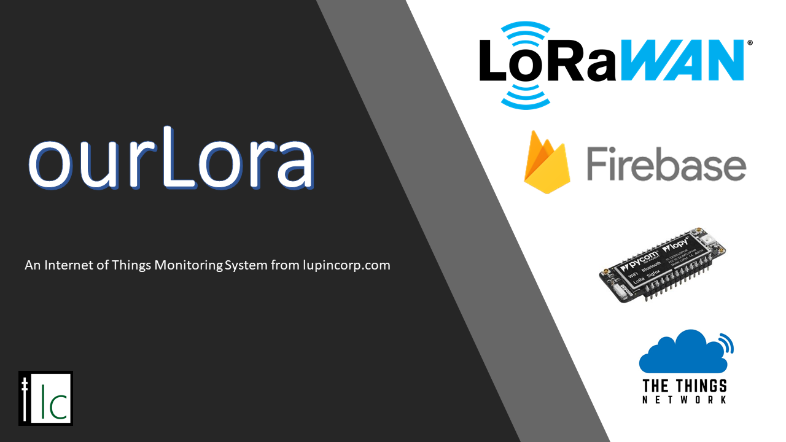

<!-- Image carousel showing applications main functions -->


<!-- Cards with more information about application functions (align with carousel info) -->

<div class="card-container">
  <mat-card class="home-card">
    <mat-card-header class="card-header">
      <div mat-card-avatar class="card-1-image"></div>
      <mat-card-title>ourLora</mat-card-title>
      <mat-card-subtitle
        >Lorawan IOT management and reporting system</mat-card-subtitle
      >
    </mat-card-header>

    <mat-card-content>
      <p>
        This project manages a IOT (Internet of Things) boat monitor that
        monitors the location, temperature, humidity and battery level for the
        boat. This information is periodically sync'ed with a the ourLora
        application running on the google cloud and exposed toa user via a
        Angular frontend. Communication from the boat to the backend uses the
        Lora wireless system (Allowing long range, low power communication) to
        the TTN (The Things Network) LoraWan service. The IOT device is based on
        pycoms' hardware and uses the micro-python programming language for
        simplicity.
      </p>
    </mat-card-content>
  </mat-card>
</div>
